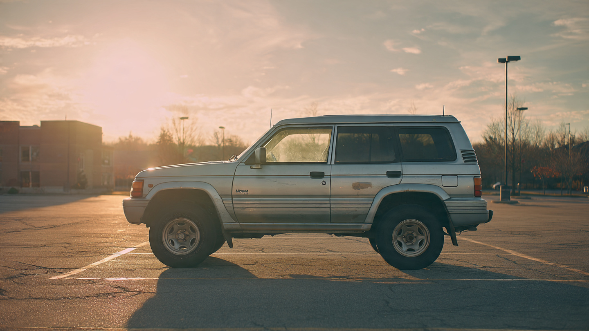

Mitsubishi Filed Zero Recalls in 2024. The Montero Kills at Nearly Twice the F-150’s Rate.

Mitsubishi Motors filed 150 total recalls with NHTSA across its entire 40-year U.S. history.[1] Ford did 153 in 2025 alone.[2] In all of 2024, Mitsubishi filed zero.
Obvious interpretation: Mitsubishi builds reliable vehicles. FARS disagrees.
813 people died in Mitsubishi vehicles between 2014 and 2023, across an estimated U.S. fleet of 1.12 million units.[3] Ford lost 34,954 in the same window, which makes Mitsubishi’s count look negligible until you realize the fleet is roughly one-hundredth the size, and when you adjust for miles driven instead of raw headcount, individual models stop looking invisible and start looking lethal.
That body-on-frame SUV, imported from the early 1990s through 2006, rides on architecture predating electronic stability control mandates, side curtain airbag standards, and modern offset crash testing protocols. Roughly 70,000 remain registered, and they contributed 167 deaths over the FARS window, producing a fatality rate 84% higher than the F-150.[3] Eighty-four percent. On a vehicle that generates zero regulatory attention because its fleet is too small to trigger complaint thresholds. Body-on-frame platforms transfer collision forces through rigid ladder rails directly into the cabin; progressive crumple zones in unibody designs absorb and redirect that energy before it reaches the occupant compartment, which is why every modern passenger vehicle abandoned ladder-frame construction for anything besides trucks and heavy-duty applications. Montero occupants get the version where their ribcage does the absorbing.
Now cross the near-zero recall record with FARS toxicology data, and the portrait gets worse. Mitsubishi’s weighted impairment rate across all tracked fatal-crash drivers runs approximately 20.4%, slightly exceeding Ford’s 19.4%.[3] A brand with one-hundredth the recall activity has drivers who are marginally more impaired when they die. Drill into individual models and the Endeavor stands out: 25.4% of its 130 tested drivers were positive for alcohol or drugs, which tops the Ford Mustang’s 21.9% and means one in four Endeavor drivers in fatal crashes was chemically impaired.
NHTSA investigations are complaint-driven: fewer vehicles on roads generate fewer complaints, fewer complaints trigger fewer investigations, and fewer investigations produce fewer recalls, which means Mitsubishi’s near-absence from the recall database reflects statistical invisibility, not engineering superiority. A manufacturer selling under 100,000 vehicles annually in a market that registers 16 million never accumulates the complaint density to trip NHTSA’s investigation thresholds, and because nobody is crashing often enough to generate a pattern in the database, the regulator designed to catch dangerous vehicles never looks at vehicles that are dangerous in small numbers.
Counterargument, stated fairly: low recall counts might genuinely indicate better initial quality. Small fleets generate proportionally fewer field reports, and NHTSA’s system is designed to prioritize based on population exposure. Mitsubishi may be doing nothing wrong; the system may be working exactly as intended. But “working as intended” still produces a Montero killing at 1.91 per 100 million miles while generating zero regulatory scrutiny.
If you own a pre-2007 Montero or mid-2000s Endeavor, check your VIN at nhtsa.gov/recalls today. Both models predate the 2012 ESC mandate and neither offers standard side curtain airbags across all trims. Verify whether your airbag inflators were part of the Takata recall, because Mitsubishi’s minimal recall footprint makes it less likely you ever received the notice. If you’re shopping used and see either model priced under $5,000: the price is telling you something about what that vehicle will do for you at 35 mph into a concrete barrier.
Sources & References
- NHTSA, Recalls Database, Mitsubishi Motors recall history 1987–2026. nhtsa.gov
- Carscoops, “Mitsubishi’s Entire 40-Year Recall History Is Three Short Of Ford’s 2025 Alone,” May 3, 2026. carscoops.com
- NHTSA, Fatality Analysis Reporting System (FARS), 2014–2023. nhtsa.gov
- IIHS, “Vehicle Size and Weight,” body-on-frame vs. unibody crash dynamics. iihs.org